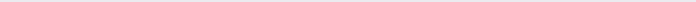

Sobre Mim
Estou em transição de carreira, migrando para a área de Desenvolvimento Web Full
Stack.
Neste processo estou aprendendo com a ajuda da Labenu sobre HTML, CSS, JavaScript, React, Node, SQL
dentre outros assuntos relacionados à programação. O aprendizado não é somente para desenvolver as
hard skills, mas também as soft skills e estar preparada para os novos desafios que estão por vir.
Na minha jornada, aprendi a trabalhar em equipe e a estar sempre disposta a ajudar, a ter senso de
prioridade, comprometimento e responsabilidade. Aprendi também a ser forte e adaptável. Todas essas
competências me ajudaram nas empresas que passei e continuarão ajudando a ser a profissional Web
Full Stack que pretendo ser.
Experiências
Generali Brasil Seguros
Rio de Janeiro
Abr 2014 - Ago 2020

Grupo Sabemi
Rio de Janeiro
Jun 2011 - Jun 2013
Formação
Labenu
Ago 2022 - Mar 2023